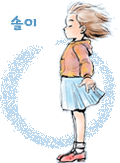
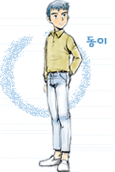
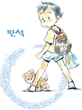
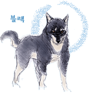

| 
|
솔이 몸이 약한 7살짜리 소녀입니다.
백구의 좋은 주인입니다.
| 
|
동이 13세 소년가장입니다.
솔이를 돌봐야 하므로 나이에 비해 어른스럽습니다.
솔이의 약값때문에 결국은 백구를 팔고 후회합니다.
|
|
백구 토종 진돗개 입니다.
솔이남매에게 친구이자 보호자 같은 존재
투견꾼에 팔려가 어려움을 겪으며 성견으로 성장하고,
투견장에서 탈출해 솔이를 다시 만나기 위해 조도로
돌아가는 긴 여정을 떠납니다.
| 
|
판석 8살짜리 사내아이 이고
철없는 개구장이이며 솔이를 좋아하는것 같습니다.
| 
|
블랙 투견. 백구의 숙적입니다.
인간에 이용당해서 투견이 됬지만, 자신이 최고라는
자부심과 불타는 승부욕 하나만은 인정을 해야겠습
니다. 그려..
| | | | |
이상 하얀마음 백구의 캐릭터입니다. 진도를 배경과 순수한 스토리가
이 에니메이션의 백미입니다.
좀 옛날이나 진부한 얘기처럼 들릴지는 모르겠지만,
이런 이야기야말로 상업애니만 판치는 요즘 같은 TV에 정말
아이들에게 필요한 에니메이션이 아닐까요.
개가 눈썹과 표정, 말을 한다는것은 좀 웃겼지만, 스토리 전개상
어쩔수 없었는듯..
일본의 모 에니에서도 투견이야기가 나오지만, 백구는 천성이 틀린듯..
|